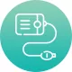

Уникальная технология
и функционал, которые превосходят другие приборы по эффективности
Неинвазивно! Без побочек от таблеток и болезненного массажа.
-

Фототерапия
Поляризованный свет переменно воздействует на головку полового члена, активизируя кровоток и нервные окончания. Красный свет уничтожает инфекции, синий – снимает воспаления, жёлтый – ускоряет нервные импульсы.
-
Магнитотерапия
Магнитное поле активизирует работу полового органа, предстательной железы, мочевого пузыря. Оказывает омолаживающий «допинговый» эффект + усиливает выносливость и ощущения во время полового акта.
-

баротерапия
Баромассаж тренирует, укрепляет сосуды, улучшает кровоток в малом тазу и наполняемость пещеристых тел полового члена. Происходит естественное увеличение члена – эрекция становится длительной и стабильной.
3 типа
воздействия
доказано:
- Медикаменты при лечении заболеваний полового характера помогают на 40-50%.
- Массаж простаты НЕ ЛЕЧИТ, а лишь кратковременно улучшает эрекцию и вызывает привыкание. Аппараты с прямым воздействием на простату имеют нулевой результат.